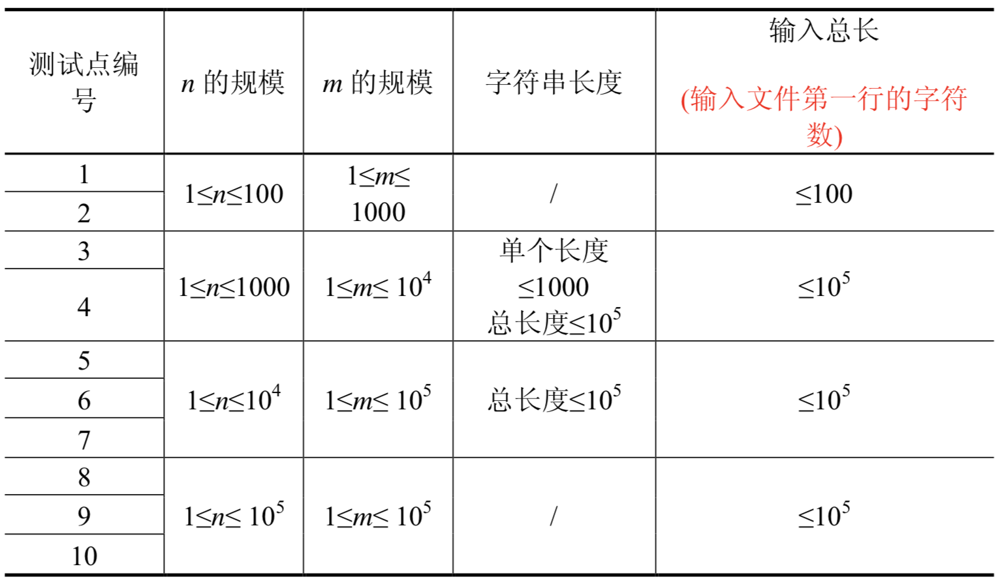

阿狸喜欢收藏各种稀奇古怪的东西，最近他淘到一台老式的打字机。打字机上只有28个按键，分别印有26个小写英文字母和'B'、'P'两个字母。
经阿狸研究发现，这个打字机是这样工作的：
输入小写字母，打字机的一个凹槽中会加入这个字母（按P前凹槽中至少有一个字母）。
按一下印有'B'的按键，打字机凹槽中最后一个字母会消失。
按一下印有'P'的按键，打字机会在纸上打印出凹槽中现有的所有字母并换行，但凹槽中的字母不会消失（保证凹槽中至少有一个字母）。
例如，阿狸输入aPaPBbP，纸上被打印的字符如下：
aaaab
我们把纸上打印出来的字符串从1开始顺序编号，一直到$n$。打字机有一个非常有趣的功能，在打字机中暗藏一个带数字的小键盘，在小键盘上输入两个数($x,y$)（其中$1≤x,y≤n$），打字机会显示第$x$个打印的字符串在第$y$个打印的字符串中出现了多少次。
阿狸发现了这个功能以后很兴奋，他想写个程序完成同样的功能，你能帮助他么?
输入的第一行包含一个字符串，按阿狸的输入顺序给出所有阿狸输入的字符。
第二行包含一个整数$m$，表示询问个数。
接下来$m$行描述所有由小键盘输入的询问。其中第$i$行包含两个整数$x,y$，表示第$i$个询问为($x,y$)。
输出$m$行，其中第$i$行包含一个整数，表示第$i$个询问的答案。
aPaPBbP 3 1 2 1 3 2 3
2 1 0
【数据规模与约定】
所有测试数据的范围和特点如下表所示

 Comet OJ
Comet OJ